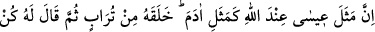
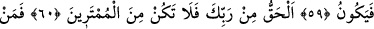
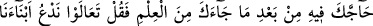
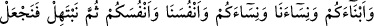
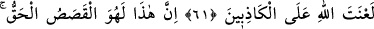
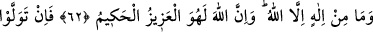
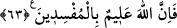

HAK RABBİNİN KATINDANDIR
59. Allah nezdinde Îsâ’nın durumu, Âdem’in durumu gibidir. Allah onu topraktan
yarattı. Sonra ona “Ol!” dedi ve oluverdi.
60. Gerçek, Rabbinden gelendir. Öyle ise şüphecilerden olma.
61. Sana bu ilim geldikten sonra seninle bu konuda çekişenlere de ki: Geliniz,
sizler ve bizler de dâhil olmak üzere, siz kendi çocuklarınızı biz de kendi
çocuklarımızı, siz kendi kadınlarınızı, biz de kendi kadınlarımızı çağıralım, sonra da
duâ edelim de Allah’dan yalancılar üzerine lânet dileyelim.
62. Şüphesiz bu (Îsâ hakkında söylenenler), doğru haberlerdir. Allah’dan başka
ilah yoktur. Muhakkak ki Allah, evet O, mutlak güç ve hikmet sahibidir.
63. Eğer yine yüz çevirirlerse, şüphesiz Allah, bozguncuları hakkıyla bilendir.
“Îsâ’nın durumu” garipliği dolayısıyla misaller arasında gösterilen hâli, “Allah
nezdinde” hüküm ve takdir açısından, “Âdem’in durumu gibidir.” Yani, Âdem’in
hiçbir şüphecinin şüphe edemeyeceği, hiçbir karşıt görüşlünün karşı çıkamayacağı
acâib hâli gibidir. “Allah O’nu” yani Âdem’in kalıbını “topraktan yarattı.” Şâyet
denirse ki: “Onu yarattı” cümlesindeki zamir Âdem’e râcidir. Halbuki Adem, henüz
toprak iken, Adem mevcut değildi. Biz de şöyle deriz:
Bu cüsse (heykel), çok yakın bir gelecekte Adem olacağı için Allah Teâlâ bu cüsseye,
-ileride olacak bir şeye, olmuş denmesi gibi- Adem demiştir. “Sonra ona “ol” dedi.”
Yani onu bir insan olarak yarattı. “O da olur” cümlenin gelişine göre “o da oldu.”
denmesi gerekirdi. Ancak Adem (a.s.)’ın içinde bulunduğu durumu hikâye etmek yani bu
eksiksiz yaratmayı şu an vukû bulan bir sahne imiş gibi canlandırmak için muzâri (geniş
zaman) sîğasına dönülmüştür.
Rivâyet edildi ki: Necrân’ın ileri gelenlerinden on dört kişilik bir heyet Medîne’ye